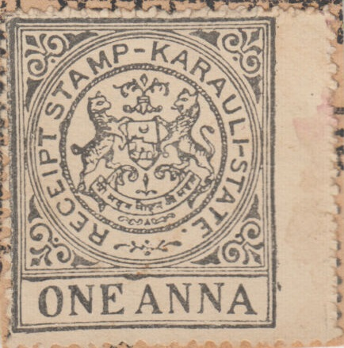
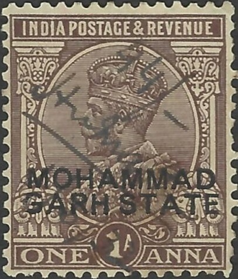
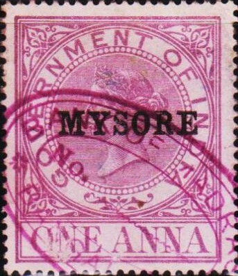
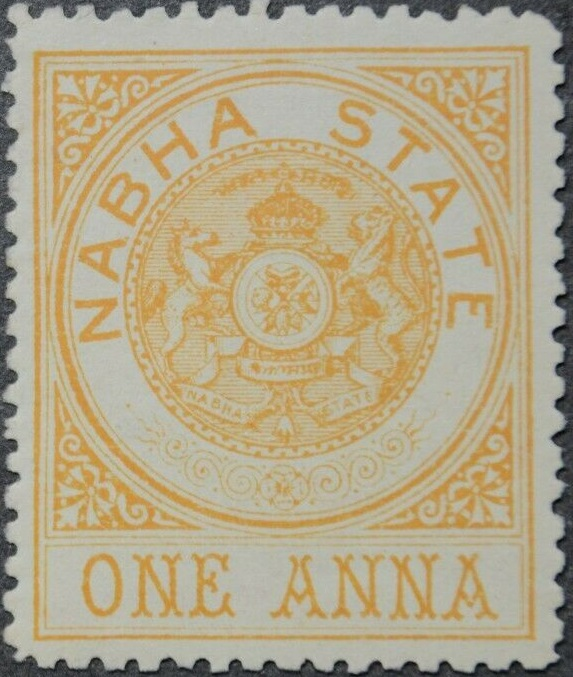
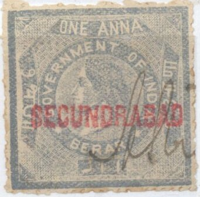

{kind=link}

Karauli
Note: on my website many of the
pictures can not be seen! They are of course present in the
catalogue;
contact me if you want to purchase it.

Karauli
Kathiawar 1892. Inscription 'KATHIAWAR AGENCY Date... Office of
issue... Vendor's signature EIGHT ANNAS Name of
Vendee.....". Only this 8 a stamp was issued according to
the Forbin guide.
"KHAIRAGARH STATE REVENUE" on postage stamp of King
George V.

Fiscal stamps of Kishengarh from 1884?, however they are not
listed in the Forbin guide.
Kishengarh: Here on a piece of document, together with the
printed red seal stationary for revenue purpose.

Kishengarh, other design
Kotah
Kushalgarh, 1940 Court Fee stamp

Las Bela: fiscal stamp of 1899, similar in design to the postage
stamps, inscription "LAS BELA STATE RECEIPT STAMP"
Mudhol State 1 a red.
Court Fee stamp of Queen Victoria with "MOHAMMAD GARH
STATE"

"MOHAMMAD GARH STATE" on postage stamp of King George
V.
Muli State 1 a
Morvee State, 1899 issue and later issue.
Government of Mysore, 1 a black, issued in 1887. A 1 a orange
also exists. Later issues, also with "C.&M.Stn."
(Civil and Military Station)
Mysore 1874 Transfer Stamp and 1874 Receipt Bill or Draft

Mysore: Foreign Bill stamp of India, surcharged
"MYSORE", issued in 1874. 15 values were overprinted.

Nabha 1890: Fiscal stamp of Nabha State.
1 a orange.

Fiscal stamp of Nawanagar of 1887 with Indian inscriptions only.
Also a 1890 fiscal stamp with inscription "NAWANAGAR
STATE" in green.
Rajkote, monogram with "R J" in the center.
Rajpipla 1888 issue; the following three values were issued: 1 a
orange, 1 a blue and 1 a green.
Rajpipla 1904 issue 1 a lilac on lilac.
"REVENUE SARANGARH STATE" on postage stamp of King
George V
Savant Vadi State Court Fee (1886). 2 R olive and red. A number
of different values exist, ranging from 1 a to 5 R.
Savant Vadi State: 1 a blue and red. Design similar to Jat State.

Stamps of Berar overprinted in red or black
"SECUNDRABAD" or "SECUNDERABAD" (here with
Hyd. R.B. overprint for Hyderabad)
"SECUNDERABAD." overprint for the state of
Secunderabad. Issued in 1890: the following values were
overprinted: 1 a, 2 a, 3 a, 4 a, 6 a, 8 a, 12 a, 1 R, 2 R, 3 R, 4
R and 5 R.
Sikkim State, mountain view, 1 a yellow, I've also seen 1 R red.
Furthermore I've seen the values 20 p yellow and 1 R blue with
'Revenue' overprint.
(Suket State, arms, 1 anna black)
Tihri Garhwal, issued in 1910: 1 a green and red, 2 a grey and
black, 4 a red and green, 8 a blue and black, 1 R yellow and
violet, 2.8 R green and black.


Travancore
Wadhwan State
Wankaner state
A link containing a gallery of Indian States revenue stamps can be found at: http://www.indiastaterevenues.com/gallery.htm.
{kind=link}
{kind=link}
{kind=link}
{kind=link}